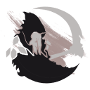

SINTI UND ROAMER
WvW Builds
SINTI UND ROAMER · SNR
SNR BUILD MATRIX
Zerg builds
Damage, First Support, Second Support and Third Support by profession.

Sinti und RoamerWvW BuildsSINTI UND ROAMER
SINTI UND ROAMER · SNR
SNR BUILD MATRIX
Damage, First Support, Second Support and Third Support by profession.